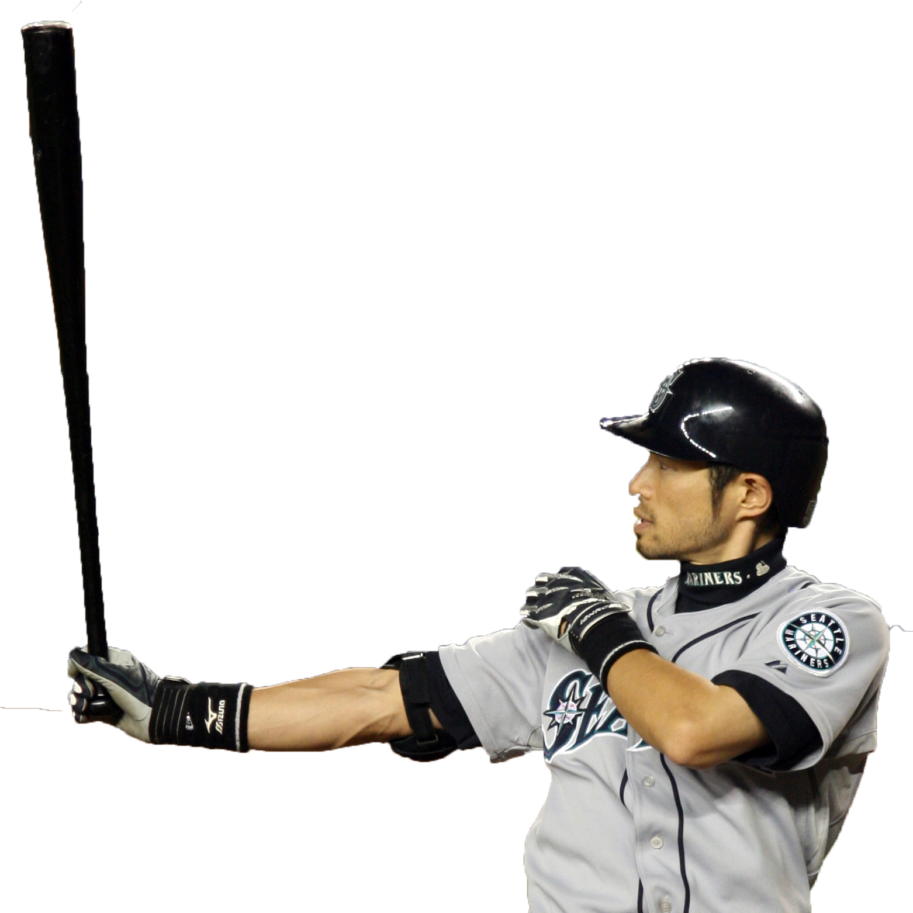

Player Spotlight: Ichiro Suzuki
 Ichiro Suzuki began his career with the Orix Blue Wave of Nippon in Japan, where
he became the first player to ever
top 200 hits in a single season. His .385 batting
average in 1994 was a Pacific League record, and marked the beginning
of many
batting titles to come. The following year, Ichiro lead the Blue Wave to their first
Pacific League
championship in 12 years.
In 2001 Ichiro joined the Seattle Mariners, becoming the first Japanese-born
position
player to be posted and signed to an MLB club. He quickly aquired a .350
batting average and 56 stolen bases, the first to
do so since Jackie Robinson in
1949. Apart from his unprecedented numbers, Ichiro brought intense media attention
to the
Mariners. Fans from Japan took incredibly expensive baseball tours to watch
Ichiro's games. More than 150 Japense reporters
and photographers were given
media access to Safeco Field.
Ichiro would go on to become one of the most impressive
All Stars in the MLB. In a 2001
game against the Oakland Athletics, Ichiro made a miraculous throw,
nailing Terrence
Long who was trying to go first-to-third on a single to right field. His "laser beam" throw
soon became
legendary. Throughout his career, Ichiro racked up 3,089 hits in the MLB,
and 1,278 in Japan, for a total of 4,367. He is
second only to Pete Rose, who still holds
the record for most career hits, with 4,683.
Ichiro's last two games in the MLB
were March 20th, 2019(opening day) and the
following day at the Tokyo Dome in Japan. At 45 years old, he was the second oldest
position
player to start for a team on its opening day. He will very likely be the first
player to be inducted into the halls of fame in both Japan
and the United States.

Notable Records
- 262 hits in one season (2004)
- Most consecutive stolen bases without caught stealing (2006-2007)
- Only inside-the-park home run in MLB All Star Game history (2007)
- Most consecutive seasons leading the league in singles (2001-2010)
- Most wins in one season, 116 wins with the 2001 Seattle Mariners
Ichiro Trivia
Test your knowledge after reading the information above.